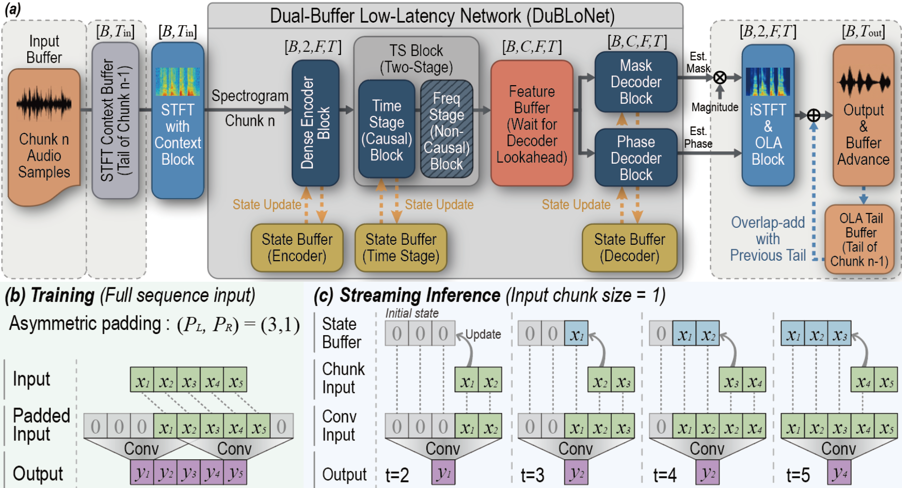
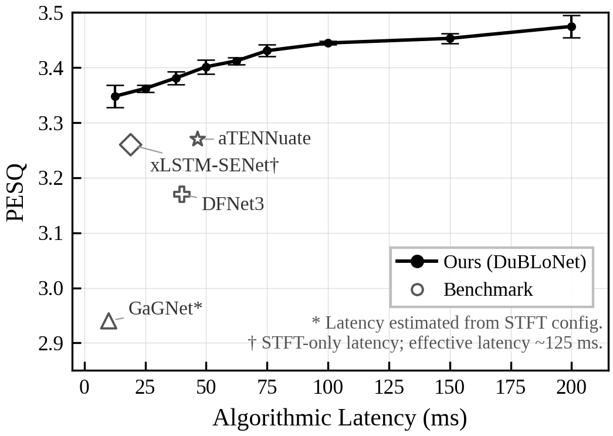

DuBLoNet is a frequency-domain causal speech enhancement model based on the Backbone encoder-decoder architecture. Asymmetric convolution padding ratios control the lookahead at each layer, enabling fine-grained latency configuration from a single trained model. At inference time, dual-buffer streaming processes audio frame-by-frame using state buffers (past context) and lookahead buffers (future context).

Audio samples from the VoiceBank+DEMAND test set. PESQ values shown are test-set averages from the paper (not per-sample scores). DuBLoNet models use a single 1.37M-parameter architecture at different latency configurations.

Best causal result per metric in bold. — : not reported or unverifiable.
| Model | Year | τ (ms) | Params | PESQ | STOI | CSIG | CBAK | COVL |
|---|---|---|---|---|---|---|---|---|
| Noisy | — | — | — | 1.97 | .921 | 3.35 | 2.44 | 2.63 |
| RNNoise | 2018 | 10 | 0.06M | 2.33 | .922 | 3.40 | 2.51 | 2.84 |
| GaGNet | 2022 | ~10 | 5.94M | 2.94 | — | 4.26 | 3.45 | 3.59 |
| xLSTM-SENet | 2025 | ~19† | 2.2M | 3.26 | .950 | 4.57 | 3.79 | 4.00 |
| DFNet3 | 2023 | 40 | 2.13M | 3.17 | .944 | 4.34 | 3.61 | 3.77 |
| aTENNuate | 2025 | 46.5 | 0.84M | 3.27 | — | 4.57 | 2.85 | 3.96 |
| DuBLoNet (12.5 ms) | — | 12.5 | 1.37M | 3.35±.02 | .952±.000 | 4.61±.01 | 3.71±.01 | 4.05±.02 |
| DuBLoNet (25.0 ms) | 25.0 | 3.36±.01 | .953±.000 | 4.62±.01 | 3.72±.02 | 4.07±.01 | ||
| DuBLoNet (50.0 ms) | 50.0 | 3.40±.02 | .953±.001 | 4.63±.02 | 3.72±.01 | 4.09±.02 | ||
| DuBLoNet (75.0 ms) | 75.0 | 3.43±.01 | .954±.001 | 4.66±.02 | 3.78±.00 | 4.12±.02 | ||
| DuBLoNet‡ (200 ms) | 200.0 | 3.47±.02 | .957±.001 | 4.69±.01 | 3.79±.03 | 4.17±.02 | ||
| MP-SENet | 2023 | — | 2.05M | 3.50 | .960 | 4.73 | 3.95 | 4.22 |
† STFT-only latency; symmetric Conv2d padding adds implicit lookahead (~125 ms effective).
‡ Symmetric padding (rR=0.5); architecture upper bound, excluded from best-causal ranking.